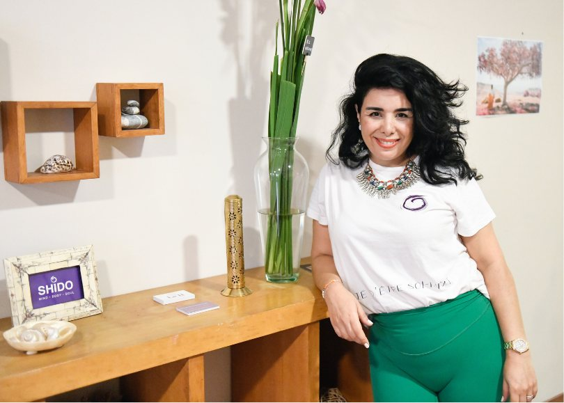
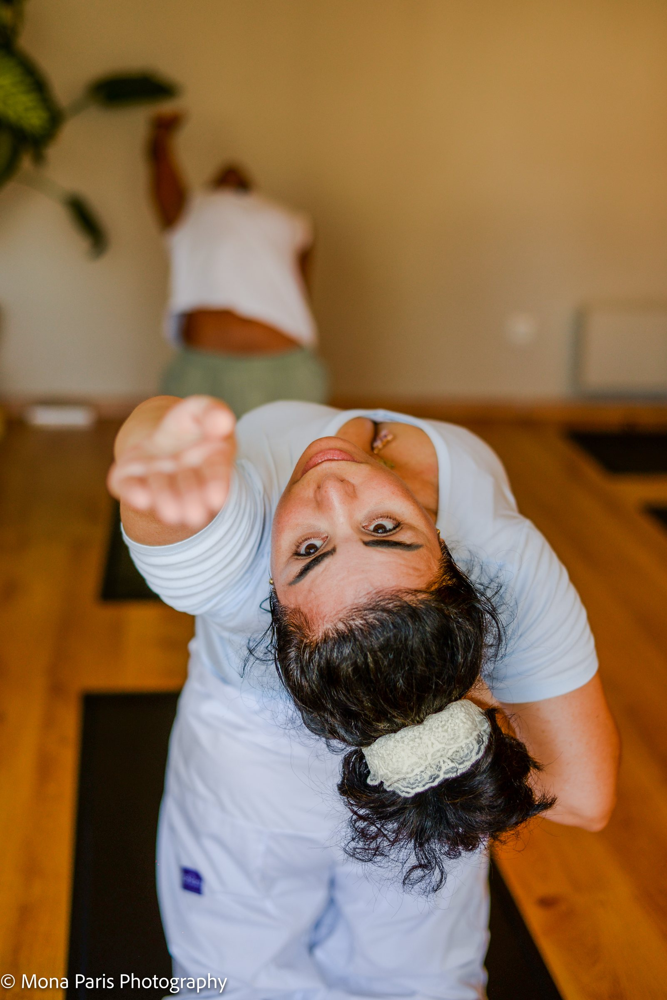
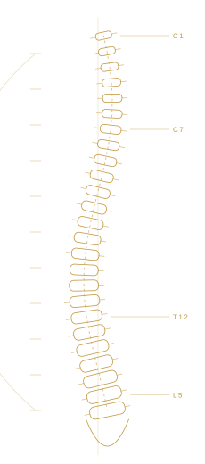

A place for the practice, study and transmission of Yoga.
SHIDO is an independent House of Yoga Education founded in Casablanca, Morocco.

Tradition Meets Knowledge.
We preserve the foundations of traditional Yoga while integrating contemporary knowledge of anatomy, physiology and human movement.
Science never replaces Yoga: it deepens it. It allows every student to understand what they practise, and to practise for a lifetime.

Photograph: Mona Paris
Understanding Before Execution.
Five principles guide our teaching.
- Understanding the practiceKnowing why, before knowing how.
- Precision in executionAccuracy over performance.
- Individual adaptationEvery body, every history, every age.
- Progressive developmentGradual, lasting evolution.
- Awareness and autonomyA practice you carry with you.


Mounia Hammouda, founder
Mounia Hammouda
Founder of SHIDO® · Yoga Therapist · Advanced Yoga Educator · Teacher Trainer
With over 25 years of experience in an international professional environment, I have developed an in-depth understanding of stress mechanisms, professional demands and their physiological and physical impact on the human body.
I hold qualifications in Yoga Therapy and Advanced Yoga Teaching from The Yoga Institute, Mumbai, India, founded in 1918. My approach brings together traditional yogic knowledge, human physiology and movement science.
My professional training also includes Hormonal Yoga Therapy with Dinah Rodrigues, a pioneering Brazilian yoga therapist and founder of the method, Yin Yoga training in New York, and recognition as a Yog Prashikshak and member of the Indian Yoga Association.
As a yoga educator and teacher trainer, I founded SHIDO® to develop an approach grounded in biomechanical precision, an understanding of human physiology, functional mobility and stress regulation, in the pursuit of health and longevity.
My vision: to establish Yoga as a rigorous discipline of Body Intelligence, rooted in knowledge, precision and a deeper understanding of human movement.

I created SHIDO with a simple conviction: Yoga does not only transform the way we move. It lastingly transforms the way we inhabit our body, breathe and manage our emotions.Mounia Hammouda, founder of SHIDO
Come and practise at the House.
36B Boulevard d'Anfa, Casablanca. Sessions are booked through Momoyoga; write to us for anything else.